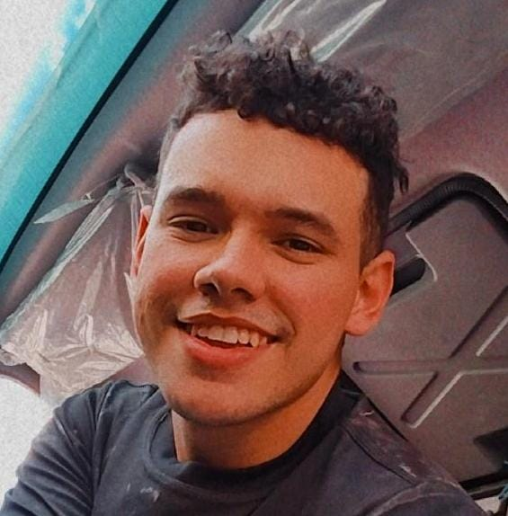

Olá, sejá bem vindo ao meu Currículo.
Me chamo Diego Levi Almeida Cavalcante, sou casado e tenho 23 anos de idade, sou habilitado na categoria A e B, possuo disponibilidade de de horário, tenho histórico como empreendedor na área de serviços gráficos digitais e impressos, sendo responsável por todos os setores administrativos basicos. O meu legado profissional é a educação em exercer cada processo, a criatividade em inovar mesmo com poucos recurssos e visão sistêmica no trabalho em equipe.

Os meus objetivos:
Pretendo seguir meu plano de carreira visando o crescimento da empresa conforme meus resultados, procuro sempre ajudar no desenvolvimento e no bom desempenho no local de trabalho e também busco minha evolução pessoal.
Minhas Qualificações:
°Trabalho experiente em edições de fotos e videos.
°Conhecimento em Canva e CapCut.
°Gamer designer (tabuleiros e jogos de mesa).
°Criatividade no trabalho online.
°Perfil de influência.
°Bom domínio de palavras e comunicação.
Minhas experiências:
>Auxiliar de mercado - Mercado Edmar
Encarregado pela gestão de estoque; processo de vendas e operações no caixa; recebimento de mercadoria, reposição de estoque e abastecimento das prateleiras; entregas da materiais; manutenção do local de trabalho entre outros serviços pertinentes a função.
>Executivo em vendas - Pinheiro Construções
Responsável pela gestão de cartela de cliente, assim como todo o processo de pré e pós vendas; recebimento de mercadoria, reposição do estoque e abastecimento das prateleiras; entregas de materiais; manutenção do espaço logistico e zelar pelo arranjo físico do estabelecimento; entreb outras atividades pertinentes a função.
>Operador de caixa - Casa Grande Supermercado
Trabalho na área de vendas da loja facilitando e colaborando com o melhor acesso do cliente com seusprodutos e dando o melhor atendimento possível para agradar e garantir a fidelidade do mesmo, sendo responsável também por outros setores.
Formação:
Ensino médio - Liceu de Baturité Domingos Sávio.
Cursando o ensino Superior - FMB
WhatsApp